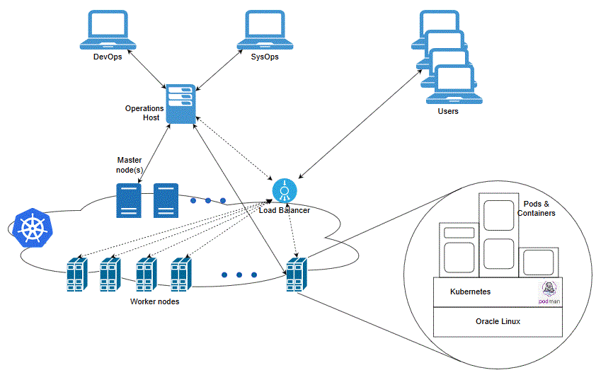

Planning and Validating Your Cloud Environment
Planning Your Cloud Native Environment
As part of preparing your environment for ASAP cloud native, you choose, install, and set up various components and services in ways that are best suited for your cloud native environment.
Setting Up Your Kubernetes Cluster
For ASAP cloud native, Kubernetes worker nodes must be capable of running Linux 8.x pods with software compiled for Intel 64-bit cores. A reliable cluster must have multiple worker nodes spread over separate physical infrastructure and a very reliable cluster must have multiple master nodes spread over separate physical infrastructure.
The following diagram illustrates the Kubernetes cluster and the components that it interacts with.
Figure 2-1 Kubernetes Cluster

The ASAP cloud native instance, for which specification files are provided with the toolkit, requires up to 16 GB of RAM and 2 CPUs, in terms of Kubernetes worker node capacity.
ASAP Server Hardware Requirements
The ASAP hardware requirements described in this section are based on the number of ASDLs processed per second. Table 3-1 provides recommended system hardware requirements for ASAP installed on an Oracle Linux platform.
Table 3-1 Hardware Requirements for Linux
| Software Components | Recommended System Linux 2 threads per core |
|---|---|
| ASAP Server and WebLogic Server | 4 cores, 16 GB RAM |
| Oracle Database | 4 cores, 32 GB RAM |
| External Storage for Oracle Datafiles | 28 x 73 GB (RAID 1+0) |
Hardware Sizing Requirements
Table 3-2 describes the allocation of hardware sizing. Table 3-2 Hardware Sizing Requirements
| Number of ASDLs | Recommended Size |
|---|---|
| Less than 40 ASDLs/second | 1 OCPU and 16 GB RAM |
| Up to 80 ASDLs/second | 2 OCPU and 32 GB RAM |
Required Components for ASAP and Order Balancer Cloud Native
To run, manage, and monitor the ASAP and Order Balancer cloud native deployment, the following components and capabilities are required. These must be configured in the cloud environment:
- Kubernetes Cluster
- Container Image Management
- Helm
- Load Balancer
- Domain Name System (DNS)
- Persistent Volumes
- Secrets Management
- Kubernetes Monitoring Toolchain
- Application Logs and Metrics Toolchain
For details about the required versions of these components, see Table 1-1 Supported Common Software for Cloud Native and Traditional Deployment
| Software | Version | Notes |
|---|---|---|
| Ant | 1.10.15 | Ant is required for direct ant-based integration with the various tools in the ASAP SDK including the Compliance tool for Cartridge Deployment using CMT. |
| Grafana | 12.3.2 | Optional. This is a monitoring tool. |
| Java | 21.0.9 | Java 21 is required for WebLogic Server and JNEP. Java 21 is required for ASAP server components. |
| Oracle Database (installed as Container Database) | 19c and 26ai | Enterprise Edition or Oracle OCI Database Service: Enterprise Edition High Performance / Oracle Grid Infrastructure. |
| Oracle Database Client | 19.29.0.0.0 (64-bit) | Not applicable. |
| Oracle Database Release Updates (RU), revisions and patches | 19.29.0.0.0 | Oracle recommends the latest available Critical Patch Updates(CPU) to avoid security issues. |
| Oracle Fusion Middleware | Oracle WebLogic Server 14.1.2 | Not applicable. |
| Oracle Fusion Middleware Patches | October 2025 CPU or later | See "About Critical Patch Updates" for more information on CPU. |
| Oracle Linux | Linux 8: Oracle Linux 8.10 Linux 9: Oracle Linux 9.7 |
Oracle recommends the latest available update. Oracle products certified on Oracle Linux are also supported on Red Hat Enterprise Linux due to implicit compatibility between both distributions. Oracle does not run any additional testing on Red Hat Enterprise Linux products. Note: Oracle Applications are developed and tested on Oracle Linux, which is optimized for performance, stability and security. |
| Oracle Communications Service Catalog and Design - Design Studio | 8.3.0.1 | See Service Catalog and Design Compatibility Matrix for details. |
| Prometheus | 3.9.1 | Optional. This is a monitoring tool. |
| Web Browsers | Google Chrome 144.0.7559.97 or later Mozilla Firefox 147.7.0esr or later Microsoft Edge 144.0.3719.92 or later |
Not applicable. |
| Recommended Cloud Native Technology Stack | ||
| The following table lists the recommended versions of the software supported with ASAP cloud native deployments. |
Note: Oracle recommends that if you use any of the components listed in this table, then use only the versions of other components listed in this table.
Table 1-2 Recommended Versions of software supported for ASAP Cloud Native Deployment Package 8.0
| Software | Versions | Notes |
|---|---|---|
| Kubernetes | 1.34.2 | See "Container Platforms for ASAP Cloud Native" for further details. |
| Cluster Networking Interface (CNI) | Flannel 0.14.0 or later | Not applicable |
| Helm | 3.19.0 | Not applicable |
| Podman | 4.9.4 or later | Not applicable |
| Traefik Ingress Controller | 2.10.6 or later | For details, see: https://artifacthub.io/packages/helm/traefik/traefik. |
Synchronizing Time Across Servers
It is important that you synchronize the date and time across all machines that are involved in testing, including client test drivers and Kubernetes worker nodes. Oracle recommends that you do this using Network Time Protocol (NTP), rather than manual synchronization, and strongly recommends it for Production environments. Synchronization is important in inter-component communications and in capturing accurate run-time statistics.
About Container Image Management
Oracle highly recommends that you create a private container repository and ensure that all nodes have access to that repository. The image is saved in this repository and all nodes would then have access to the repository. This may require networking changes (such as routes and proxy) and include authentication for logging in to the repository. Oracle recommends that you choose a repository that provides centralized storage and management for the container image.
Failing to ensure that all nodes have access to a centralized repository will mean that image has to be synced to the hosts manually or through custom mechanisms (for example, using scripts), which are error-prone operations as worker nodes are commissioned, decommissioned, or even rebooted. When an image on a particular worker node is not available, the pods using that image are either not scheduled to that node, wasting resources, or fail on that node. If image names and tags are kept constant (such as myapp:latest), the pod may pick up a pre-existing image of the same name and tag, leading to unexpected and hard to debug behaviors.
Installing Helm
ASAP cloud native requires Helm, which delivers reliability, productivity, consistency, and ease of use.
In an ASAP cloud native environment, using Helm enables you to achieve the following:
- You can apply custom domain configuration by using a single and consistent mechanism, which leads to an increase in productivity. You no longer need to apply configuration changes through multiple interfaces such as WebLogic Console, WLST, and WebLogic Server MBeans.
- Changing the ASAP domain configuration in the traditional installations is a manual and multi-step process that may lead to errors. This can be eliminated with Helm because of the following features:
- Helm Lint allows pre-validation of syntax issues before changes are applied
- Multiple changes can be pushed to the running instance with a single upgrade command
- Configuration changes may map to updates across multiple Kubernetes resources (such as domain resources, config maps, and so on). With Helm, you merely update the Helm release and its responsibility to determine which Kubernetes resources are affected.
- Including configuration in Helm charts allows the content to be managed as code, through source control, which is a fundamental principle of modern DevOps practices.
To co-exist with older Helm versions in production environments, ASAP requires Helm 3.15.3 or later saved as helm in PATH.
The following text shows sample commands for installing and validating Helm:
$ cd some-tmp-dir
$ wget https://get.helm.sh/helm-v3.15.3-linux-amd64.tar.gz
$ tar -zxvf helm-v3.15.3-linux-amd64.tar.gz
#### Find the helm binary in the unpacked directory and move it to its desired destination. You need root user.
$ sudo mv linux-amd64/helm /usr/local/bin/helm
#### Optional: If access to the deprecated Helm repository "stable" is required, uncomment and run # helm repo add stable https://charts.helm.sh/stable
#### verify Helm version
$ helm version
version.BuildInfo{Version:"v3.15.3", GitCommit:"c4e74854886b2efe3321e185578e6db9be0a6e29", GitTreeState:"clean", GoVersion:"go1.14.11"}
Helm leverages kubeconfig for users running the helm command to access the Kubernetes cluster. By default, this is $HOME/.kube/config. Helm inherits the permissions set up for this access into the cluster. You must ensure that if RBAC is configured, then sufficient cluster permissions are granted to users running Helm.
About Load Balancing and Ingress Controller
ASAP cloud native instance is running in Kubernetes. To access application endpoints, you must enable HTTP/S connectivity to the cluster through an appropriate mechanism. This mechanism must be able to route traffic to the ASAP cloud native instance in the Kubernetes cluster.
For ASAP cloud native, an ingress controller is required to expose appropriate services from the ASAP cluster and direct traffic appropriately to the cluster members. An external load balancer is an optional add-on.
The ingress controller must support:
- Sticky routing (based on standard session cookie)
- SSL termination and injecting headers into incoming traffic
Examples of such ingress controllers include Traefik, Voyager, and Nginx. The ASAP cloud native toolkit provides samples and documentation that use Traefik as the ingress controller.
An external load balancer serves to provide a highly reliable single-point access into the services exposed by the Kubernetes cluster. In this case, this would be the NodePort services exposed by the ingress controller on behalf of the ASAP cloud native instance. Using a load balancer removes the need to expose Kubernetes node IPs to the larger user base, and insulates the users from changes (in terms of nodes appearing or being decommissioned) to the Kubernetes cluster. It also serves to enforce access policies.
Using Domain Name System (DNS)
A Kubernetes cluster can have many routable entry points. Common choices are:
- External load balancer (IP and port)
- Ingress controller service (master node IPs and ingress port)
- Ingress controller service (worker node IPs and ingress port)
ASAP cloud native requires hostnames to be mapped to routable entrypoints into the Kubernetes cluster. Regardless of the actual entry points (external load balancer, Kubernetes master node, or worker nodes), users who need to communicate with the ASAP cloud native instances require name resolution.
The access hostnames take the prefix.domain form. prefix and domain are determined by the specifications of the ASAP cloud native configuration for a given deployment. prefix is unique to the deployment, while domain is common for multiple deployments.
The default domain in ASAP cloud native toolkit is asap.org.
For a particular deployment, as an example, this results in the following addresses:
dev1.wireless.asap.org(for HTTP access)admin.dev1.wireless.asap.org(for WebLogic Console access)
These "hostnames" must be routable to the entry point of your Ingress Controller or Load Balancer. For a basic validation, on the systems that access the deployment, edit the local hosts file to add the following entry:
<ip_address> dev1.wireless.asap.org admin.dev1.wireless.asap.org t3.dev1.wireless.asap.org
However, the solution of editing the hosts file is not easy to scale and coordinate across multiple users and multiple access environments. A better solution is to leverage DNS services at the enterprise level.
Configuring Kubernetes Persistent Volumes
Typically, runtime artifacts in ASAP cloud native are created within the respective pod filesystems. As a result, they are lost when the pod is deleted. These artifacts include application logs and WebLogic Server logs.
While this impermanence may be acceptable for highly transient environments, it is typically desirable to have access to these artifacts outside of the lifecycle of the ASAP could native instance. It is also highly recommended to deploy a toolchain for logs to provide a centralized view with a dashboard. To allow for artifacts to survive independent of the pod, ASAP cloud native allows for them to be maintained on Kubernetes Persistent Volumes.
Regardless of the persistence provider chosen, persistent volumes for ASAP cloud native use must be configured: - With accessMode ReadWriteMany - With a capacity to support the intended workload